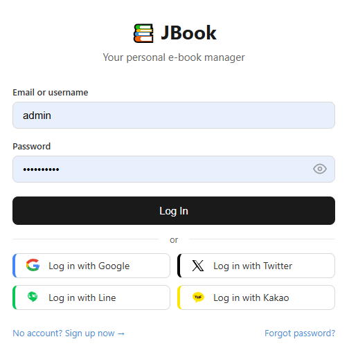

Sign In
You can use the site without an account — your data is kept on this device. Sign up when you want more; whatever you have already done here (browsing, reading position, bookmarks, notes) moves to the new account.

Sign up
- Click Log in at the bottom left of the page.
- On the sign-in page, switch to Sign Up.
- Enter an email and a password, then submit.
Ways to log in
- Username and password.
- Social account — the sign-in page lists the providers this site has enabled (such as Google, Apple, Twitter, LINE, Kakao, Yandex). Click one and follow the prompts.
Forgot password
- On the sign-in page, click Forgot password?
- Enter the email you registered with; a reset email will arrive.
- Follow the link in the email to set a new password.
Staying signed in
- Usually you remain signed in after closing and reopening the browser.
- If you see a message that the session expired, log in again. Your reading position and bookmarks are not lost.